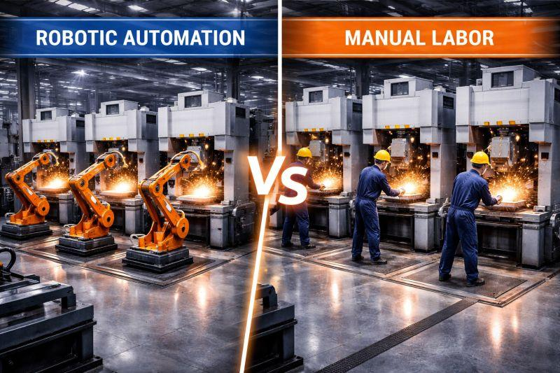

IMPACTO DE LAS TECNOLOGÍAS EM LOS NEGOCIOS Y LA SOCIEDAD
impacto positivo de las tecnologias
La tecnología se ha convertido en uno de los principales factores de transformación de los negocios en Ecuador. Su utilización ha cambiado la forma en que las empresas producen, comercializan, distribuyen y ofrecen sus productos y servicios.
Actualmente, tanto las grandes empresas como los pequeños emprendimientos utilizan herramientas digitales para mejorar su funcionamiento, atraer clientes, reducir costos y competir en el mercado. Este proceso se conoce como transformación digital, y consiste en incorporar tecnologías en las diferentes actividades de una organización para mejorar sus resultados.
El marketing digital permite que los negocios promocionen sus productos y servicios mediante internet, redes sociales y plataformas de publicidad. En Ecuador, herramientas como Facebook, Instagram, TikTok y WhatsApp Business se han convertido en medios utilizados por emprendedores para comunicarse con sus clientes y dar a conocer sus productos.
Impacto positivo para los negocios
- Permite promocionar productos sin realizar grandes inversiones en publicidad tradicional.
- Ayuda a conseguir nuevos clientes de diferentes ciudades.
- Facilita conocer las opiniones y preferencias de los consumidores.
- Mejora la comunicación entre los negocios y sus compradores.
- Permite crear promociones y campañas publicitarias dirigidas a públicos específicos.
impacto negativo de las tecnologias
Aunque la tecnología ha generado grandes oportunidades para el crecimiento de los negocios en Ecuador, también ha provocado efectos negativos y dificultades para algunas empresas, especialmente para los pequeños emprendimientos y negocios tradicionales que no cuentan con suficientes recursos económicos o conocimientos tecnológicos.
La incorporación de herramientas digitales puede generar dependencia tecnológica, pérdida de empleos en determinadas actividades, riesgos informáticos y mayores gastos de mantenimiento. A continuación, se presentan los principales impactos negativos.
- Pérdida de empleos>
- Desigualdad entre grandes empresas y pequeños negocios
- Los pequeños emprendimientos tienen dificultades para competir con grandes empresas.
- Algunos negocios no pueden adquirir programas o equipos modernos.
- Se amplía la diferencia de productividad entre empresas.
- Los negocios tradicionales pueden perder clientes frente a competidores digitalizados.
- Aumento de los delitos informáticos y fraudes electrónicos
- Robo de información bancaria y datos personales.
- Suplantación de identidad de empresas y clientes.
- Estafas mediante páginas web falsas.
- Pérdidas económicas por accesos no autorizados.
- Desconfianza de los consumidores hacia las compras por internet.
- Dependencia excesiva de la tecnología
- Interrupción de las ventas.
- Retrasos en la atención al cliente.
- Pérdida temporal de información.
- Dificultades para realizar pagos y facturación.
- Disminución de la productividad empresarial.

La automatización permite que las máquinas y los programas informáticos realicen actividades que anteriormente eran desarrolladas por personas. Esto puede disminuir la necesidad de contratar trabajadores en determinadas áreas.
Las grandes empresas generalmente cuentan con mayores recursos económicos para implementar sistemas tecnológicos, mientras que muchos pequeños negocios no tienen la misma capacidad de inversión.
El crecimiento de las transacciones digitales también ha incrementado los riesgos relacionados con estafas, robo de información y ataques informáticos. Los negocios que no cuentan con sistemas adecuados de protección pueden sufrir pérdidas económicas y daños en su reputación.
Consecuencias
Algunos negocios dependen tanto de sus sistemas informáticos que, cuando ocurre una falla técnica o una interrupción de internet, sus actividades comerciales pueden detenerse.